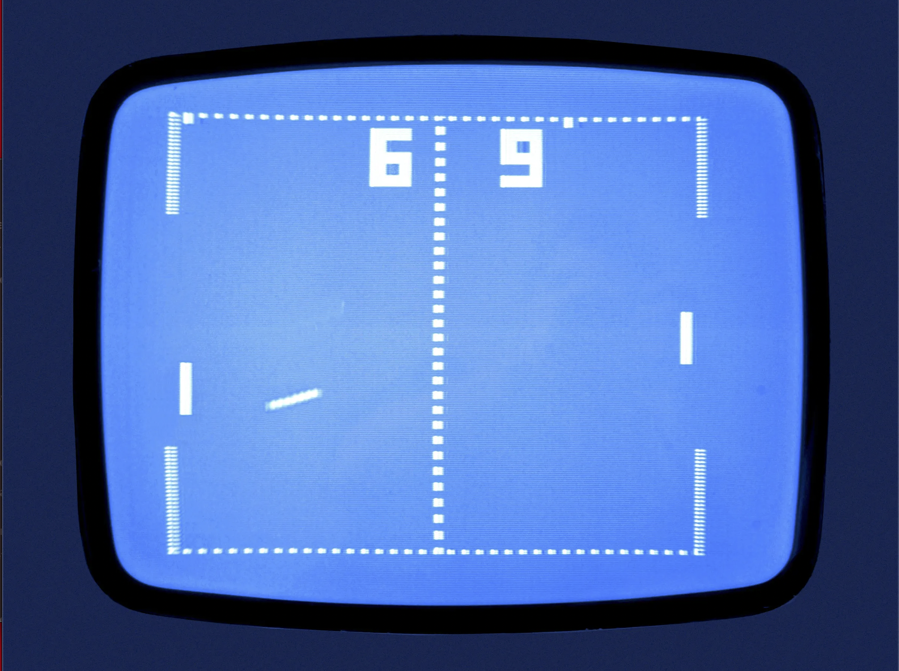

The Game of Pong
Find out below on how to play!
How to Play Pong?
It's a game first to ten points.
All you need to do is hit the dot on to the other side of the screen once is passes through you get a point!
You can choose either play with your mouse or your keyboard.
For this website I am planning on giving you the mouse option.
The Pong I will have on my website will have it's little spin to it.
Tell me what you think.
Let's Play Pong!
Below, you will find the coolest way to play pong there is sure I took my own little spin on it but I know you'll like it!
How To Play Pong
Ever heard of the game table tennis? Image playing that on a computer!
You have to paddles and a dot that flies aroud the screen.
I'll provide an image under this

It's a game first to ten points.
All you need to do is hit the dot on to the other side of the screen once is passes through you get a point!
You can choose either play with your mouse or your keyboard.
For this website I am planning on giving you the mouse option.
The Pong I will have on my website will have it's little spin to it.
Tell me what you think.
The History of Pong
Pong was made by the company Atari which was a big stapel in retro gaming.
Don't get me wrong Atari is amazing but if you dive deeper into Pong's creation you cans see that it was mainly coded by two men who fought over the ownership of Atari and one ended ups leaving.
These men were Ted Dabney and Nolan Bushnell I will give biographys on the two.
Ted Dabney
Dabney was the main coder of the game and wa the one who left after the fight. Dabney died in 2018 and Bushnell takes full credit for pong and Atari.
Nolan Bushnell
Bushnell is the current owner of Atari he is still alive to this day managing the company. He stayed after the fought with Dabney. But he helped code less of pong which is probably one of the reasons fights were started.